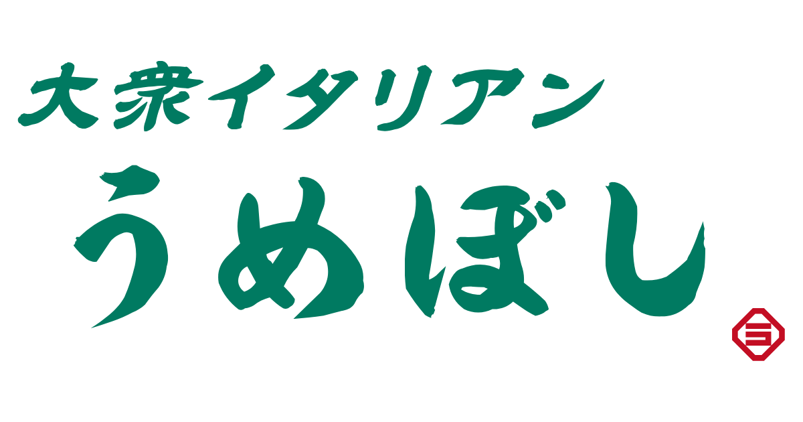

名物！自家製ソーセージ
化学調味料を一切使わず店内で1から手作り。豚トロと牛脂で旨みを引き出した、うめぼし自慢の一本。

樽生ワインと、
大衆イタリアン。
福岡・天神南の大衆イタリアンうめぼし。
自家製ソーセージや前菜盛り合わせ、こだわりパスタを樽生ワインとともに。
天神南駅6番出口徒歩1分。17時から深夜まで営業中。
化学調味料を一切使わず店内で1から手作り。豚トロと牛脂で旨みを引き出した、うめぼし自慢の一本。
お魚もお肉もお野菜も、全てが少しずつ楽しめる一皿。お食事のスタートにもお酒のアテにもぴったり。
大樽から注がれる樽生ワイン。白・赤・泡と、バラエティ豊かなお料理によく合います。
「大衆イタリアンうめぼし」は、福岡で愛される大衆酒場「食堂うめぼし」の4店舗目。系列の中でも唯一、イタリアンメニューをご提供しています。
大樽から注がれるワインにも合うバラエティ豊かなお料理を、気軽な大衆価格でお楽しみいただけます。カウンターの緑色は当店限定。お料理やドリンクの写真映えもぜひお楽しみください。
会社帰りの一杯やご友人との語らいなど、おひとり様から気軽にご利用ください。
名物の樽生ワインをはじめ、スプリッツアーやウイスキー、ノンアルコールまで。
SNS映えするドリンクも多数。
パイン・ピーチ・グレフル・オレンジなど、フルーツ香る爽やかなスプリッツアー。
自家製レモンをたっぷり漬け込んだ、名物ドリンクのひとつ。
ミントとライムが香る、爽やかな一杯。食事にもよく合います。
個性的な緑色のカウンターが目印。おひとり様から、ご友人とのちょい飲みまで幅広くご利用いただけます。
全席禁煙（喫煙スペースあり）。天神南駅6番出口から徒歩約1分、会社帰りにも立ち寄りやすい立地です。
お問い合わせはお電話にてお気軽にどうぞ。